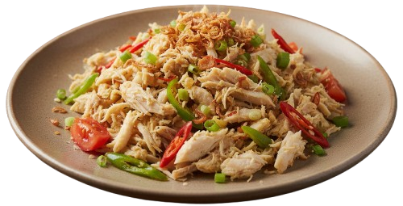
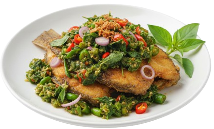
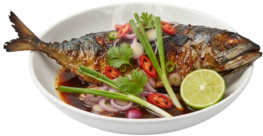

Olahan Ikan
Kothokan Ikan Pindang
pedas gurih khas Jawa
♡

Tumis Ikan Suwir
pedas gurih dan praktis
♡

Ikan Nila Sambal Kemangi
pedas harum kemangi
♡
Sup Ikan Tomat
segar dan gurih
♡
Pepes Ikan
harum daun pisang dan bumbu rempah
♡

Ikan Kembung Bakar
gurih dan harum bumbu bakar
♡
Kakap Asam Manis
segar asam manis
♡